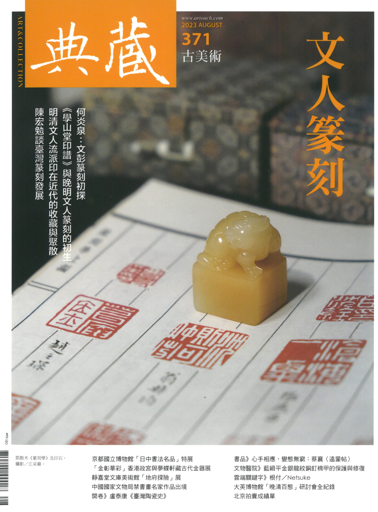
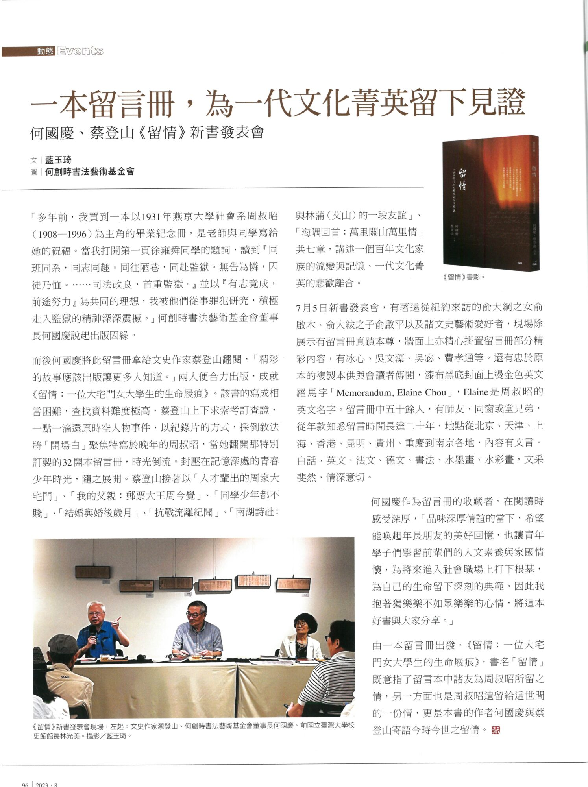

第96页报道《留情》新书发表会，说明周叔昭留言册的题写时间跨越二十年。这一跨度有助于辨明册主毕业年份与各页题写日期的区别。Page 96 reports the Liuqing book launch and states that entries in Zhou’s album span twenty years. The graduation year therefore cannot date every contribution.
文献说明Document note
封面与页脚均标2023年8月，馆方网页标题中的“2003年8月”有误。该报道未展示滕白也题写页，不作为其手迹图像。The cover and page footer establish August 2023; the museum webpage’s 2003 label is erroneous. The report does not reproduce Teng’s album page.

《典藏·古美术》2023年8月封面。文：蓝玉琦；图：何创时书法艺术基金会；《典藏·古美术》2023年8月。Art & Collection, August 2023: cover. Text: Lan Yuqi; photographs: Ho Chuang Shih Calligraphy Foundation; Art & Collection, August 2023.

《留情》新书发表会报道：第96页。文：蓝玉琦；图：何创时书法艺术基金会；《典藏·古美术》2023年8月。Liuqing book-launch report, p. 96. Text: Lan Yuqi; photographs: Ho Chuang Shih Calligraphy Foundation; Art & Collection, August 2023.